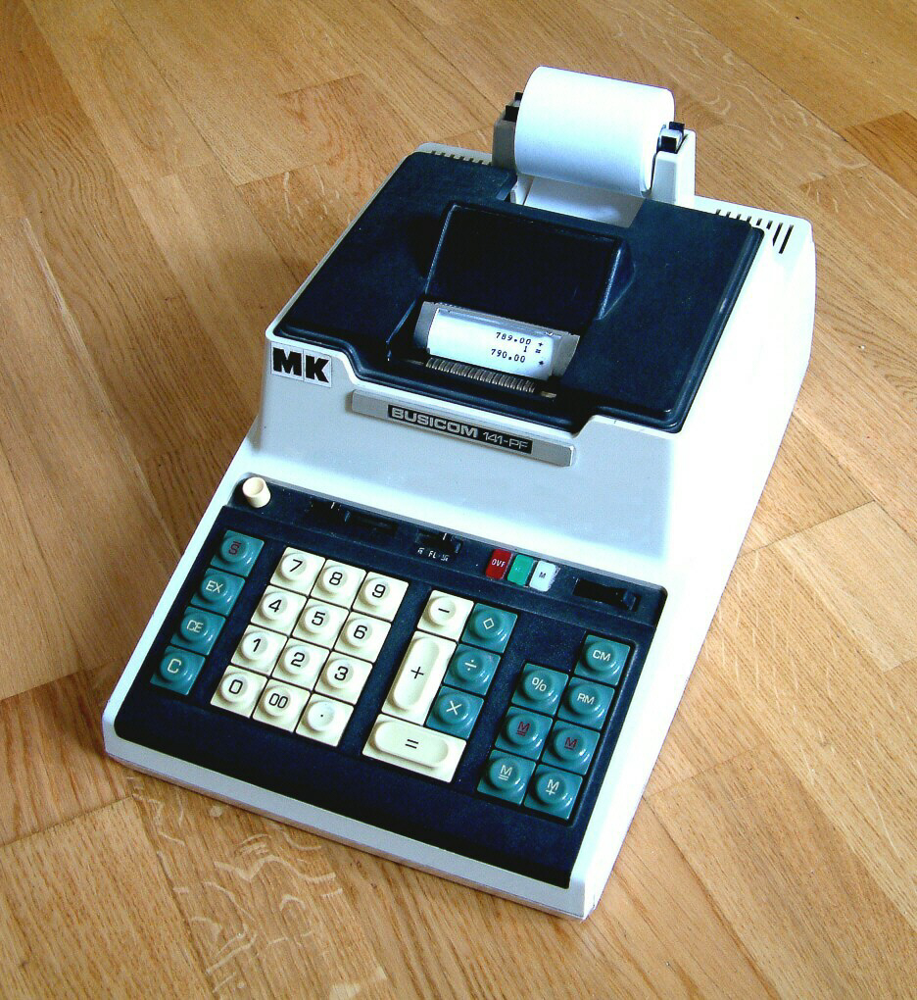
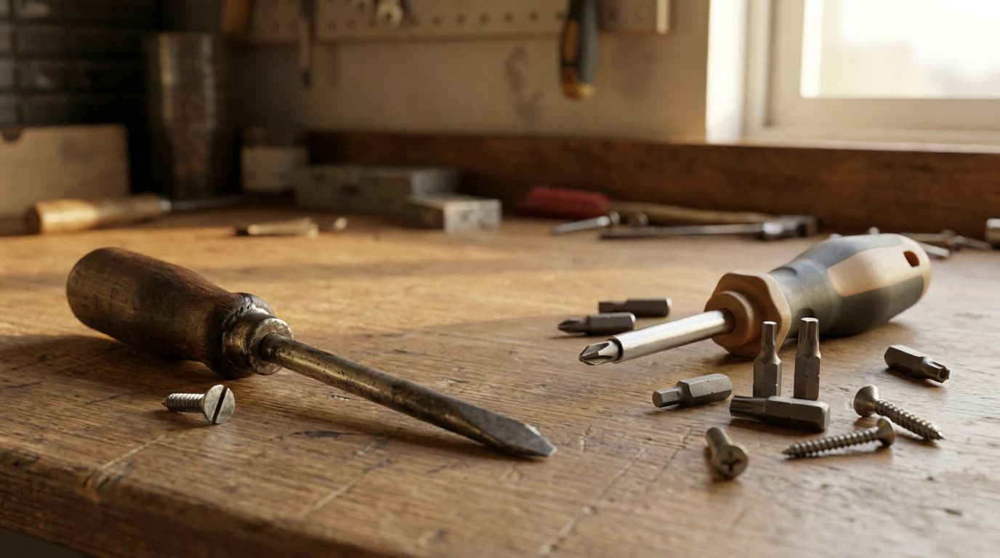
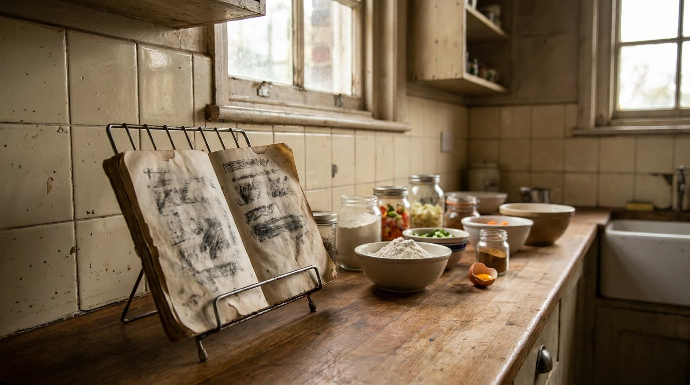
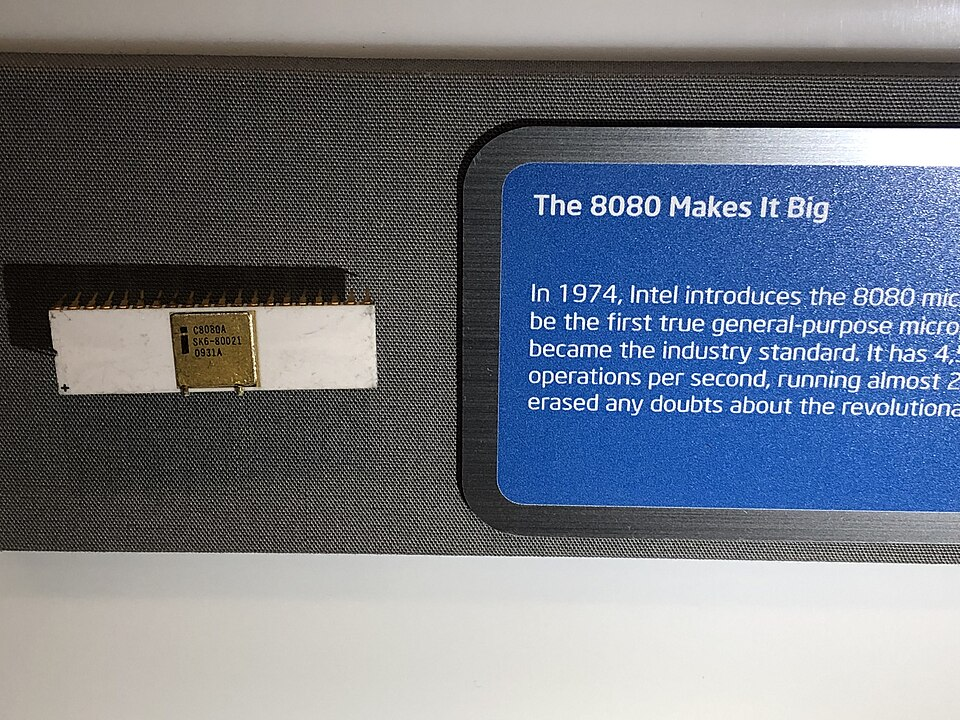
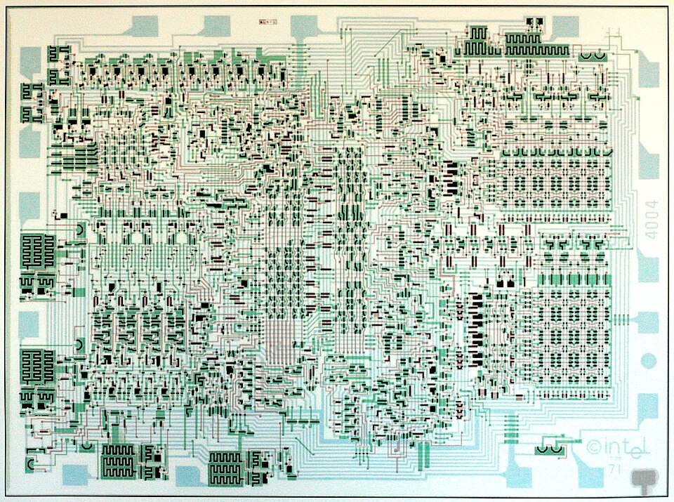
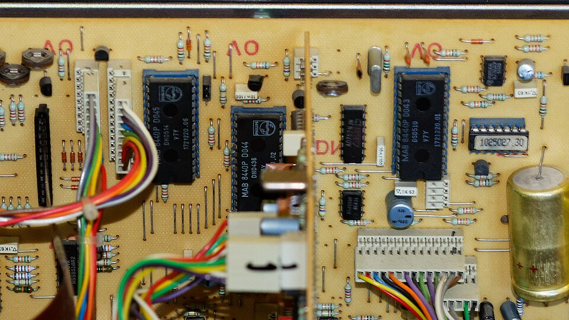
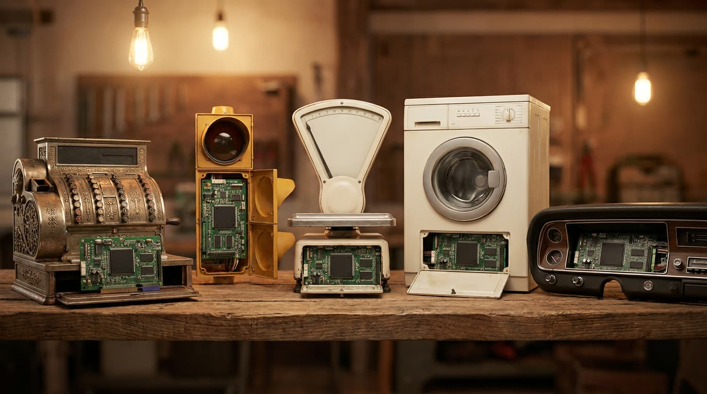

O microprocessador
De 1969 a 1974. O circuito integrado já juntou o circuito num pedaço só. Mas cada chip continua fazendo uma coisa só. Quando o áudio pedir, aperte Próximo.
O que trava agora. Um computador é uma placa grande lotada de chips diferentes, cada um desenhado do zero pro trabalho dele. Produto novo significa projeto de chip novo: caro, demorado, e só fecha a conta se vender milhões.
A encomenda da calculadora

Uma fabricante japonesa procura uma empresa americana de chips: quer uma família inteira de calculadoras, e cada modelo pede um conjunto sob medida de mais de dez pastilhas diferentes.
Um chip só, e a ordem na memória
O mesmo chip serve pra qualquer modelo. O que muda não é a peça: é o conteúdo da memória.

A ideia é de 1948

Quatro movimentos, repetidos pra sempre
É só isso, e ele não faz mais nada. Qualquer programa que já rodou em qualquer computador é essa mesma voltinha, repetida um número absurdo de vezes por segundo.
Um processador inteiro num chip

Não era vendido sozinho: vinha num pacote de quatro pastilhas, o processador mais as memórias. Trabalhava quatro bits por vez, o suficiente pra um algarismo decimal, porque era peça pensada pra calculadora.
O direito de vender pra qualquer um
Sem esse acordo, o microprocessador teria nascido e ficado preso dentro de um produto só.
A família de oito bits

Com quatro bits a peça conta até quinze. Com oito, chega a 256 opções: já dá pra lidar com número grande de uma vez e com caractere de texto. É o suficiente pra rodar um computador de propósito geral.
O valor sai do metal e entra no programa
O software nasceu como tradutor, no episódio do compilador. É aqui que ele vira o lugar onde o valor mora.

Ele foi parar em tudo


Genérica e barata, a peça saiu do laboratório de computador e foi parar em caixa registradora, balança, semáforo, forno, máquina de lavar, painel e injeção de carro, brinquedo.
1974
Se a peça já é barata e o equipamento já cabe numa mesa, o que falta pra essa máquina sair da sala da empresa e entrar na casa das pessoas?